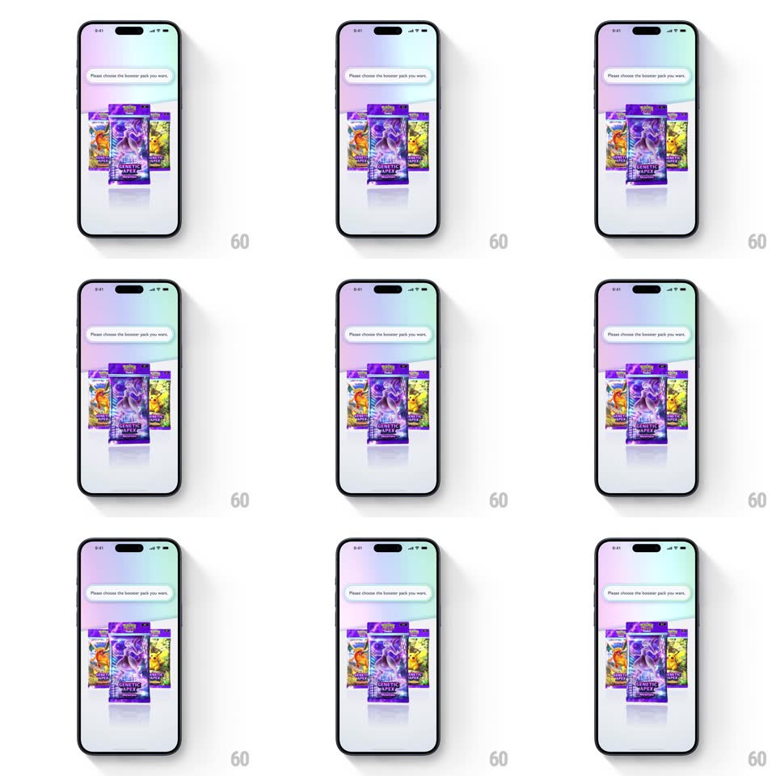

Media
Frame-by-frame

Rebuild this interaction 1:1: Pokemon TCG Pocket's pack select - under the "Please choose the booster pack you want." bubble, three 3D booster packs (Charizard, Mewtwo center front, Pikachu) bob gently on offset phases over the pastel gradient stage, each casting a soft reflection.

Rebuild this interaction 1:1: Pokemon TCG Pocket's pack select - under the "Please choose the booster pack you want." bubble, three 3D booster packs (Charizard, Mewtwo center front, Pikachu) bob gently on offset phases over the pastel gradient stage, each casting a soft reflection. ## Integration Integration: stack-agnostic spec - springs given as stiffness/damping, timed motions as duration + curve; map every value to your framework and animation library of choice. ## Scene A soft pastel gradient (pink to blue) screen: a white speech-bubble pill at top reading "Please choose the booster pack you want." and three upright booster packs in a loose row - orange Charizard pack left, purple Genetic Apex Mewtwo pack centered and forward, yellow Pikachu pack right - with glossy floor reflections. ## Motion spec Pattern: idle floating trio. - Each pack bobs vertically on its own phase (translateY +/-6px, ~2.2-3s loops, staggered by ~500ms) with a tiny counter-rotation (rotateZ +/-1.5deg) - a gentle hover, not bouncing. - The center pack sits slightly larger and lower (closer to camera); side packs drift at 80% amplitude - the depth difference stays visible. - Reflections on the glossy floor track each bob inversely (reflection translateY mirrors the pack's motion). - Tap a pack: it dips and lifts (translateY +6 -> -10px, 250ms, spring) as a selection acknowledgment before the flow continues. ## Calibration - The three bob loops never sync up - offset phases keep the scene alive. - Motion amplitude stays small - product display, not a toy. ## Reduced motion Packs static; only the selection dip remains. ## Don't miss - The speech-bubble pill has a small tail and sits above the packs like a shopkeeper's prompt. - The center pack's wrapper catches a soft light sweep every ~4s (holo band, 600ms) - the hero pack draws the eye.